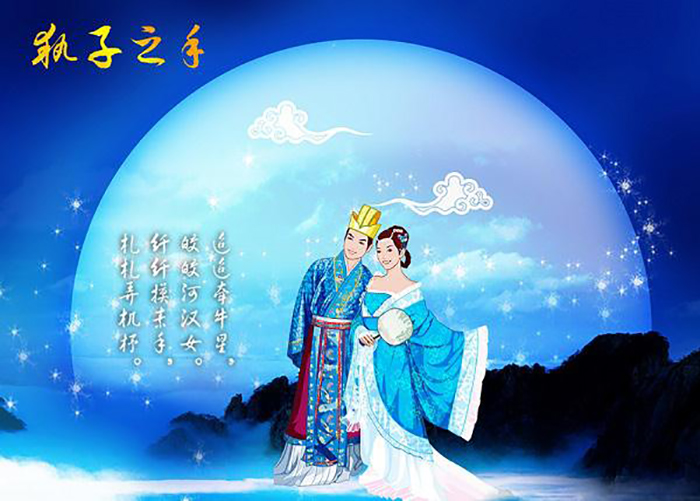
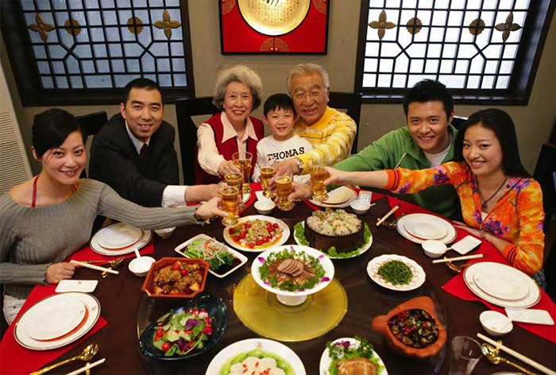
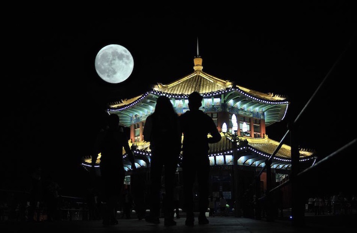
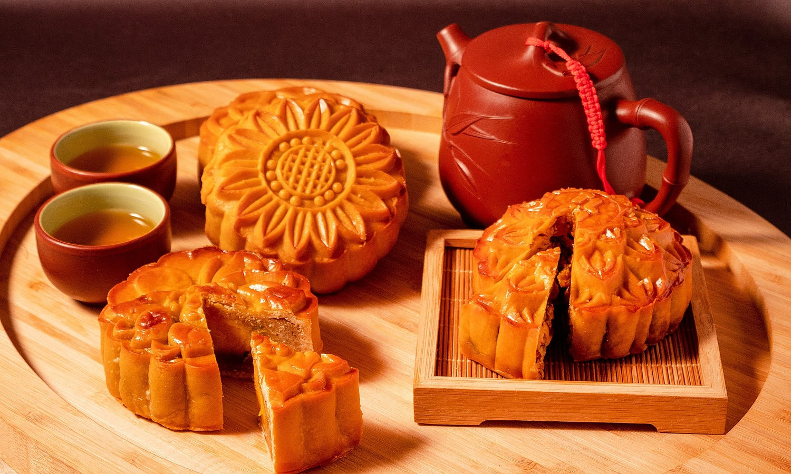
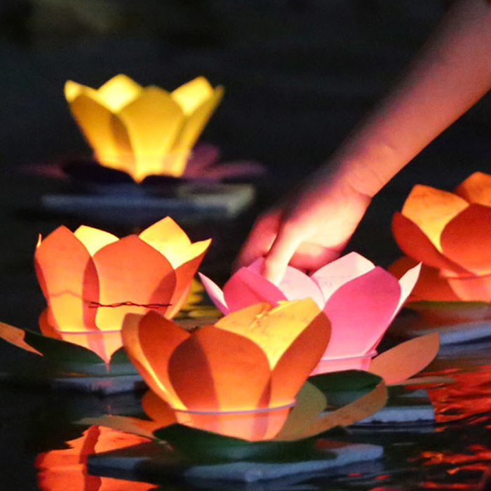
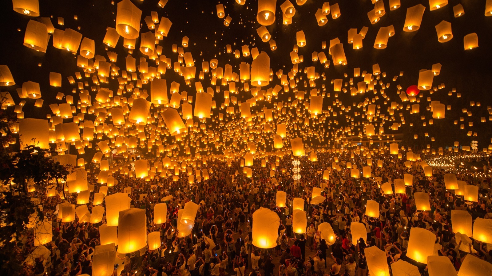

Phong tục đón Tết trung thu ở Trung Quốc
Phong tục đón Tết trung thu của người dân Trung Quốc từ xưa đã được gắn liền những đến truyền thuyết về
chuyện tình của Hằng Nga và Hậu Nghệ.
Tương truyền rằng thời cổ đại, khi Trái đất có đến 10 mặt trời, khiến thế giới phải gánh chịu hạn hán
khủng khiếp. Do vậy mà Ngọc Hoàng ra lệnh cho Hậu Nghệ đi bắn hạ chín mặt trời, cứu sống muôn loài. Và để
thưởng công, Người đã ban cho chàng một viên thuốc bất tử.
Hậu Nghệ mang nó về nhà đặt trong một chiếc hộp, định sau này sẽ chia sẻ với người vợ xinh đẹp của mình
là Hằng Nga. Nhưng vào một ngày nọ, biến cố ập đến khi người vợ tò mò mở chiếc hộp và nuốt viên thuốc rồi
nàng bay lên tận trời cao và cuối cùng hạ xuống Mặt Trăng vì thuốc quá mạnh.
Khi Hậu Nghệ vừa về nhà phát hiện mọi chuyện thì đã quá muộn. Từ đó đôi vợ chồng cách biệt nhau mãi.
Hằng Nga chỉ biết làm bạn với một chú thỏ ngọc cũng đang sống trên cung trăng với mình.

Phong tục đón Tết trung thu ở Trung Quốc bao gồm những gì ?

Trung thu là Tết đoàn viên, sum vầy
Bởi vì đây là dịp lễ hiếm hoi trong năm mà mọi thành viên trong gia đình trở về, tụ họp với
nhau. Dù đang làm ăn ở đâu và xa xôi đến mấy, họ cũng sắp xếp về quê để gặp lại gia đình, họ
hàng và
quan trọng là cùng ăn bữa cơm đoàn viên.
Sau bữa cơm, các thành viên trong gia đình sẽ ngồi lại cùng nhau để thưởng nguyệt (ngắm
trăng)
và cùng ăn những chiếc bánh trung thu xinh xắn dưới ánh đèn lồng lung linh, bên trên là vầng
trăng
tròn vành vạnh.

Ngắm trăng
Từ thời cổ đại, người Trung Quốc đã có phong tục ngắm trăng vào đêm trung thu.
Đến thời Đường - Tống, việc thưởng nguyệt, ngắm trăng trong đêm đoàn viên càng trở nên thịnh
hành nên người ta còn gọi Trung thu là Tết ngắm trăng.

Ăn bánh Trung thu
Một trong những phong tục đón Tết Trung thu ở Trung Quốc còn được truyền đến ngày nay là phá
cỗ đêm trăng.
Trong số các loại bánh thì nổi bật nhất là bánh Trung thu hình tròn với hoa văn đẹp mắt bên
trên để biểu thị cho sự viên mãn, tròn đầy.

Tế trăng
Đây là phong tục đón Tết trung thu Trung Quốc có từ thời cổ đại.
các thiếu nữ bắt đầu cúng trăng vào ngày Tết Trung thu để cầu mong mình có được vẻ đẹp thanh
cao thuần khiết như nàng Hằng Nga hay người con gái nước Tề xưa kia.

Thả đèn cầu an
Vào đêm 15 tháng 8 Âm lịch, người Trung Quốc còn thả đèn trên sông hoặc thả đèn lồng Khổng
Minh bay lên trời để cầu mong may mắn, ước muốn hạnh phúc đến với bản thân, gia đình và bạn bè